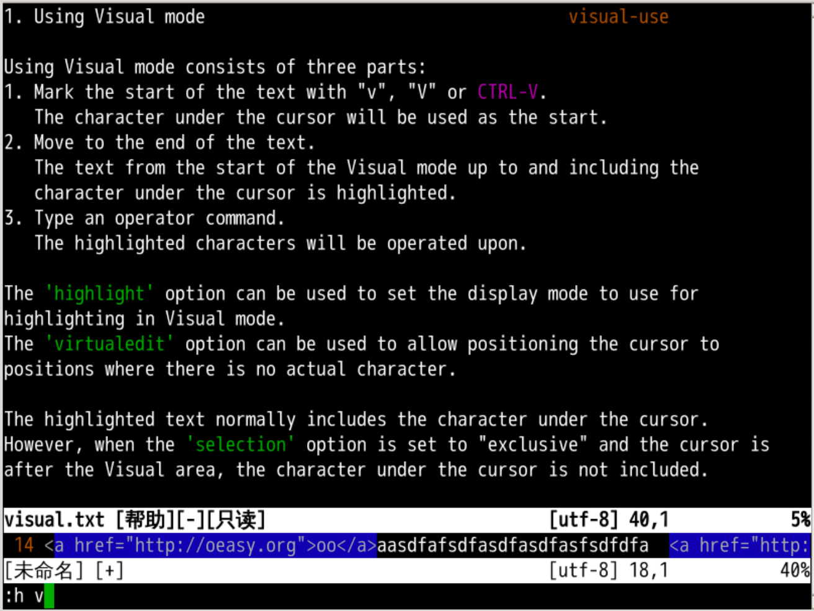
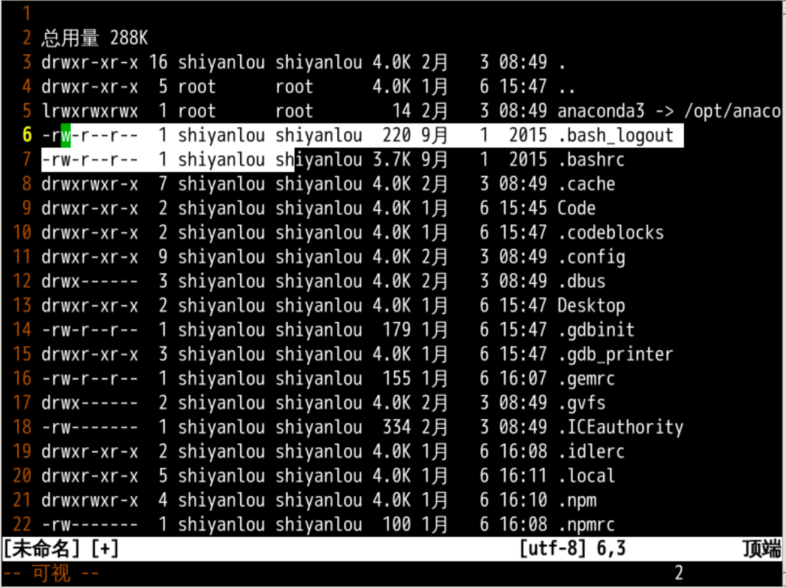
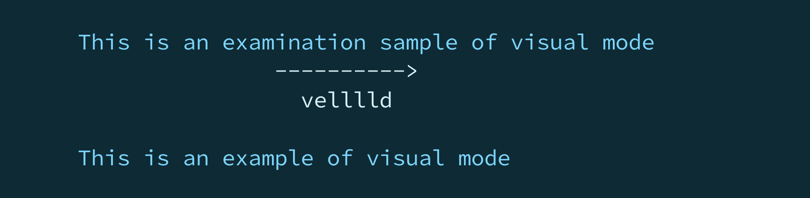
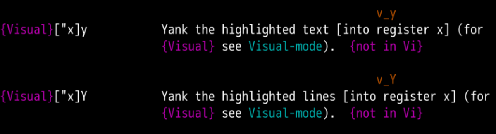
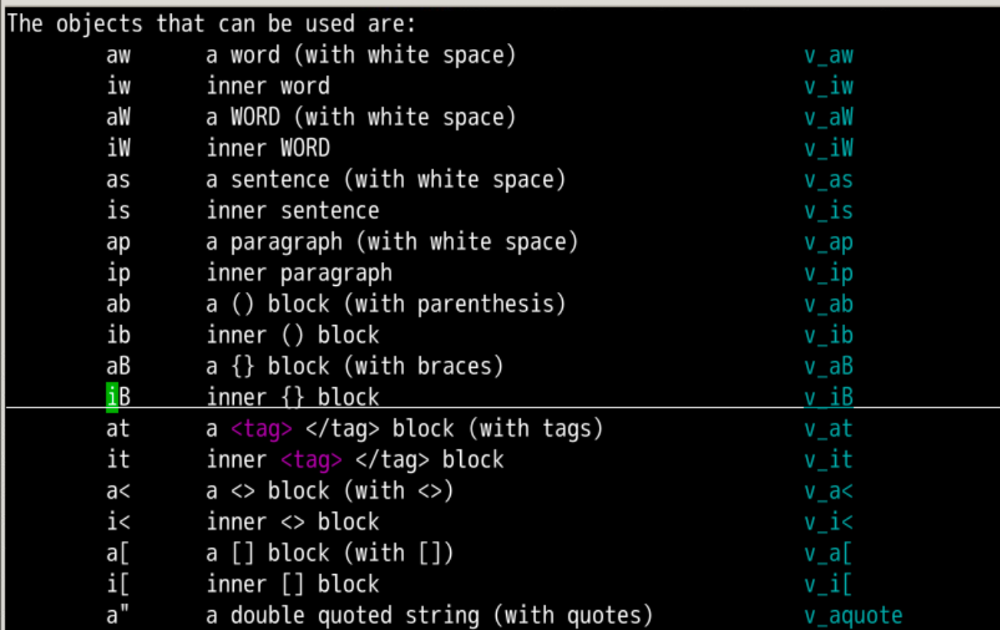
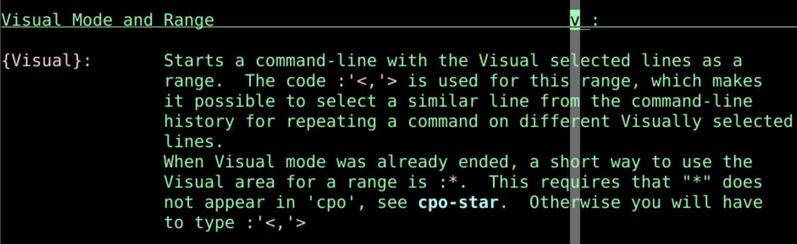

:%s/<h2>\(.*\)<\/h2>/ - \1/g:%s/<img src=\"\(.*\)\" title=\"\(.*\)\" \/>/[!\2]\1:%s/<a href=\"\(.\{-\})\">\(.\{-\}\)<\/a>/[\2]\1/g可视化模式
{motion} 移动光标可视可视-字符模式

shiftwidthshiftwidth"a 指定 寄存器a

:h '< 查看相应手册
motioni和a快速选择范围:'<,'>